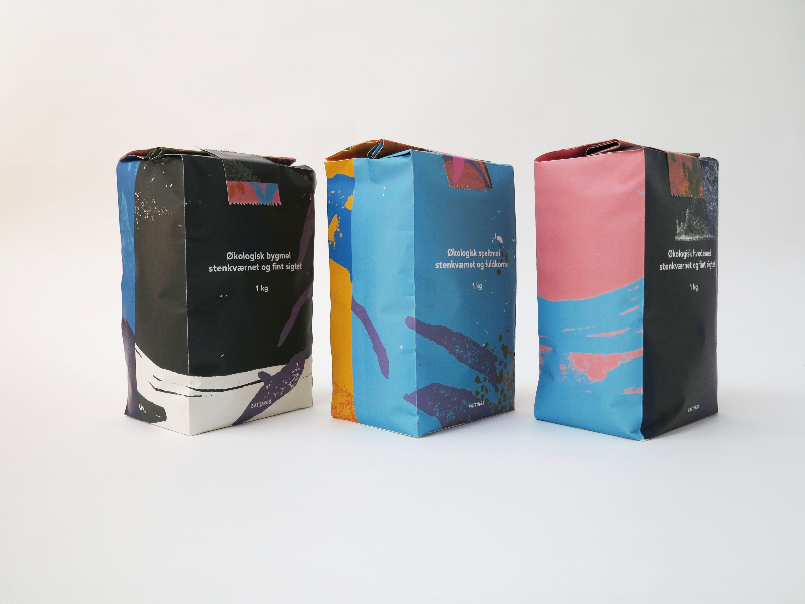
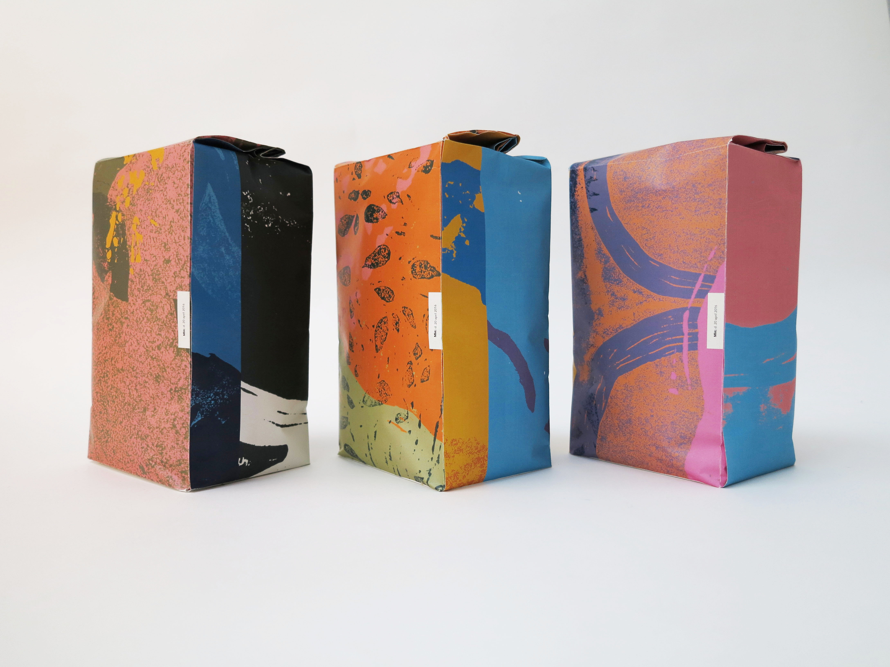
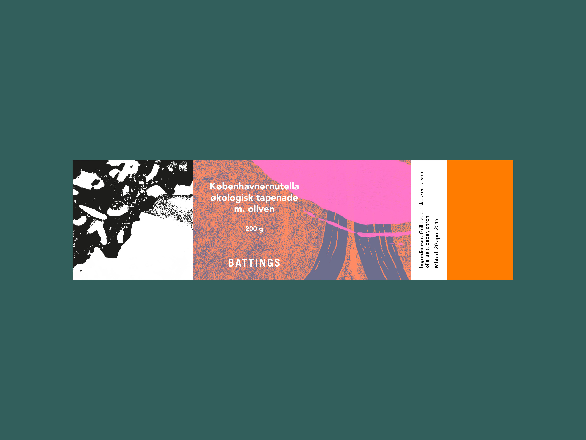
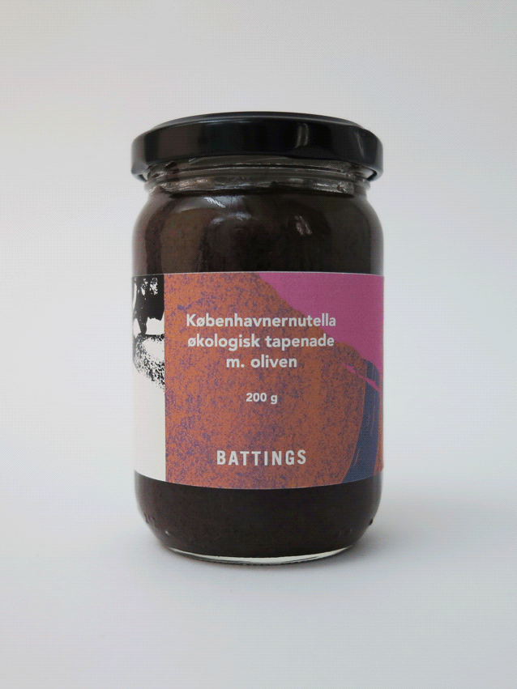
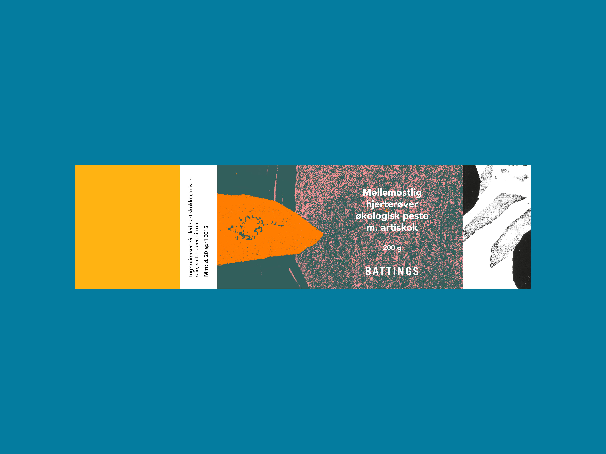
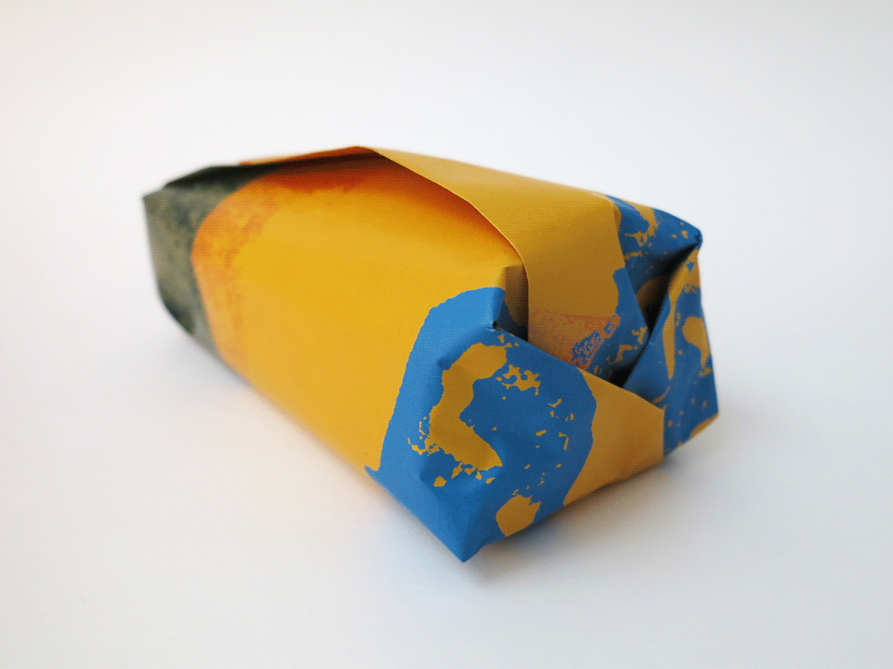
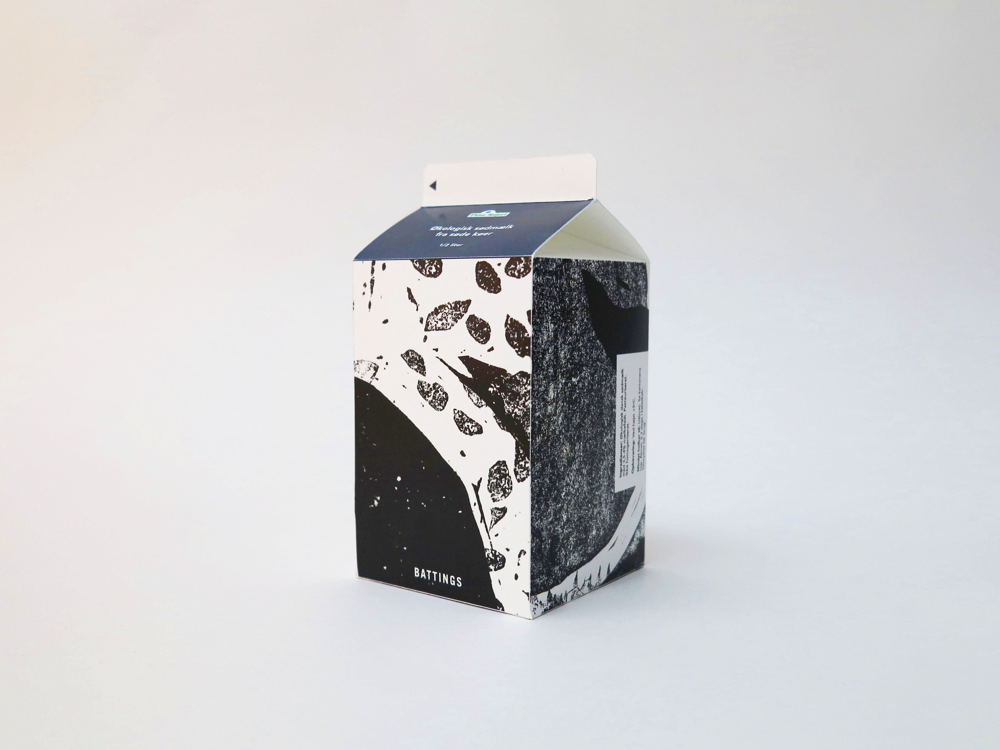
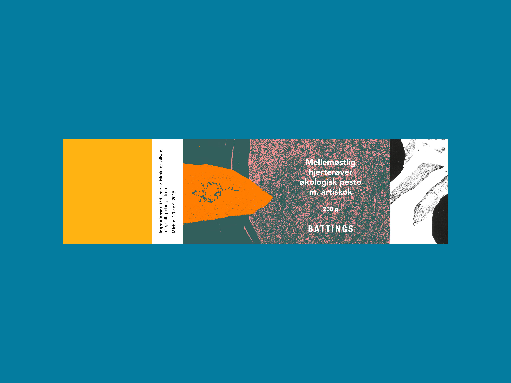
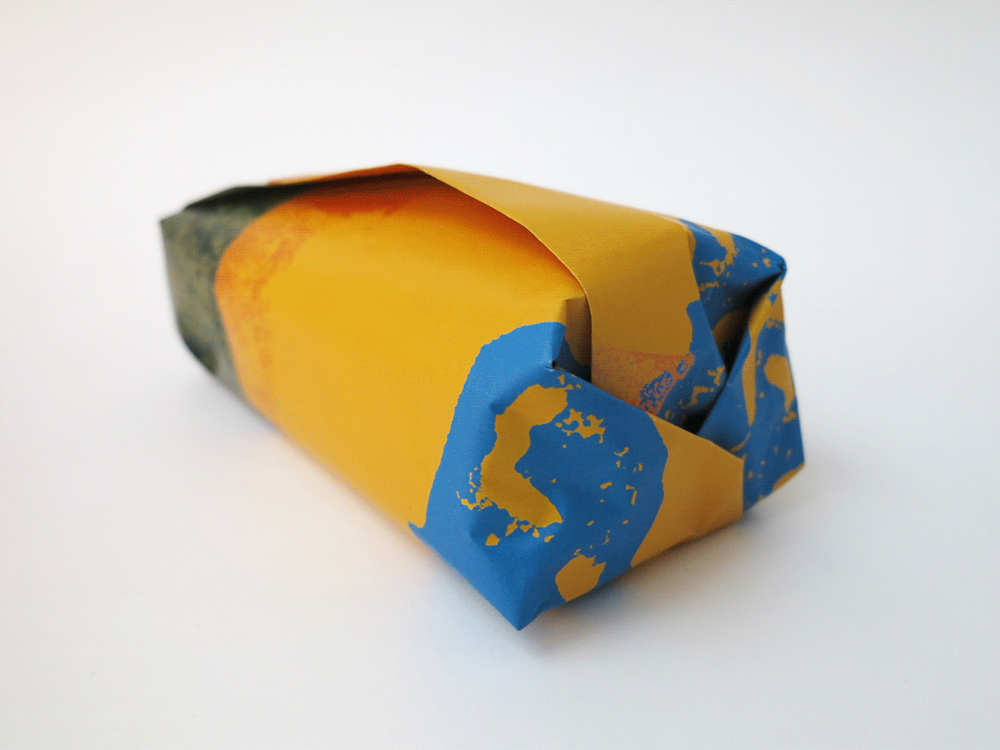
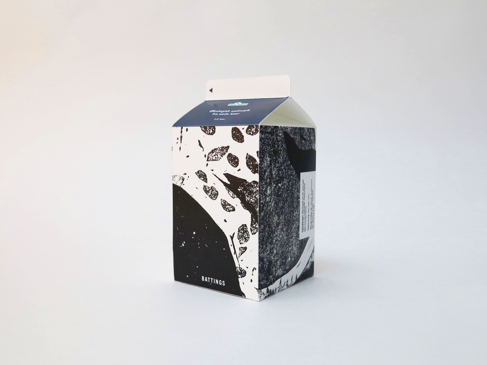

Design, concept and branding for Lars Battings bakery
Lars Batting is a man with an exceptional passion for the perfect bread. It is a passion not to be told, but one to be felt. The project was to design and brand Lars’ bakery.
Our concept was to tell Lars Battings story with a poetic and abstract approach. This character of the brand was defined through linocuts based on shapes in Lars’ bread - in colors of the early morning sky ☾ when the bakers are at work. With this expressive, abstract visual universe, the logotype was set in a sharp and fixed typography. All to reflect the spirit of the bakery – which we hoped to pass on to customers of the bakery.
This project was made in collaboration with great friends Julie Plovgaard and Karoline Kastbjerg Schroeder☺
  

 




